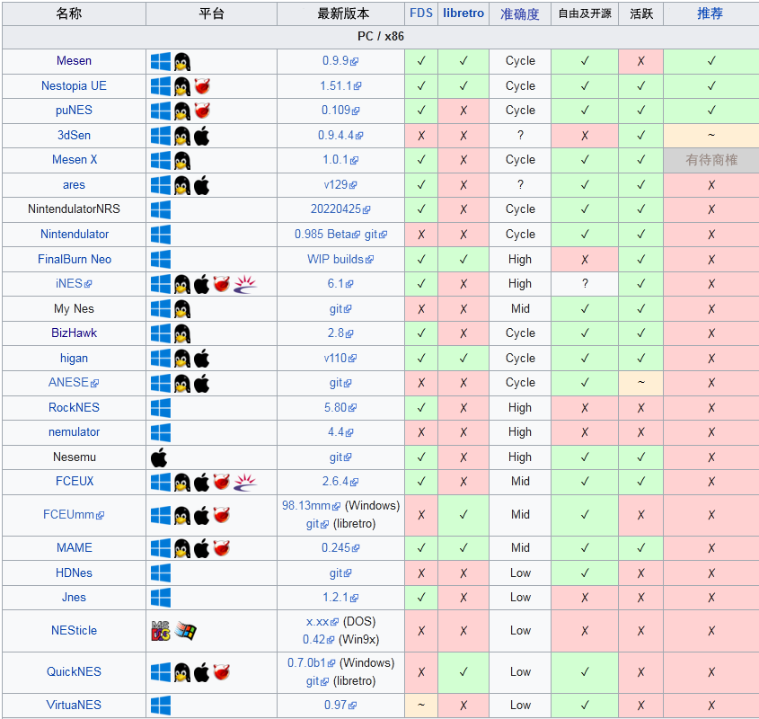

游戏机模拟器是在计算机平台上模拟电子游戏机及其游戏的模拟器程序。通常情况下，游戏机模拟器能打破原游戏机硬件的限制，提供诸如非原生手柄的支持、游戏速度控制、性能与画质增强等功能。在为已停产的旧游戏机开发自制程序或新游戏的过程中，模拟器也起着重要作用。（摘自维基百科)
FC游戏机，是任天堂生产、发行和销售的8位第三世代家用游戏机日本版，官方名称为家庭电脑（日版名：ファミリーコンピュータ，Family Computer，Famicom），俗称“红白机”，1983年7月15日在日本推出；欧美版名称为任天堂娱乐系统（英文版名：Nintendo Entertainment System，NES），俗称“灰机”，1985年10月18日在美国推出。欧美版主机外型和使用的游戏盒带（卡带），与日本版的红白机完全不同。红白机是当时最畅销的游戏机，全球累计销量超过了6100万台。FC游戏机出现对电子游戏产生了十分深远的影响，让美国电子游戏界从1983年的崩溃中恢复过来，也奠定了任天堂在当今游戏界的地位。（摘自维基百科）
以下是电脑、手机和ARM系统上的FC模拟器。
